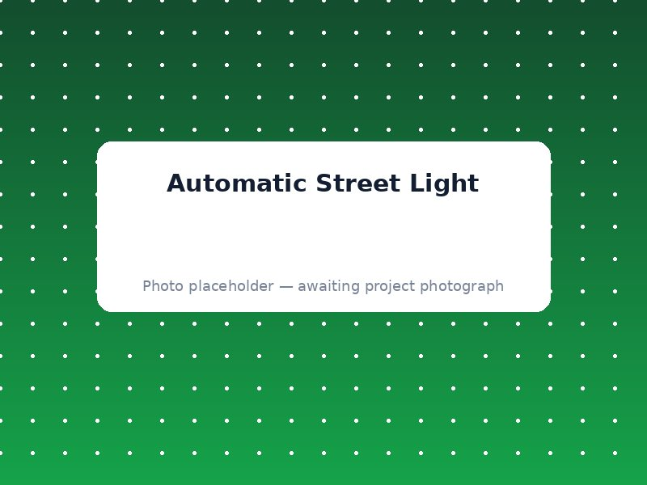

Streetlights that switch on by themselves as it gets dark outside.

This project builds a mini streetlight that turns ON automatically at night and OFF during the day — just like the streetlights in your city, but small enough to sit on your exhibition table.
An LDR (Light Dependent Resistor) constantly measures how much light is around it. The Arduino reads this value — when it drops below a set level (meaning it's getting dark), the Arduino switches a relay ON, which lights up the LED bulb.
LDR (light sensor), Relay module, LED bulb, Arduino Uno, Jumper wires
LDR resistance increases in darkness and decreases in bright light. Arduino reads this as a changing voltage and compares it to a threshold to decide ON/OFF.
How light sensors work, and how a computer chip can control a switch automatically.
We'll guide you through components, wiring and code — perfect for your exhibition.
Request This Project on WhatsApp